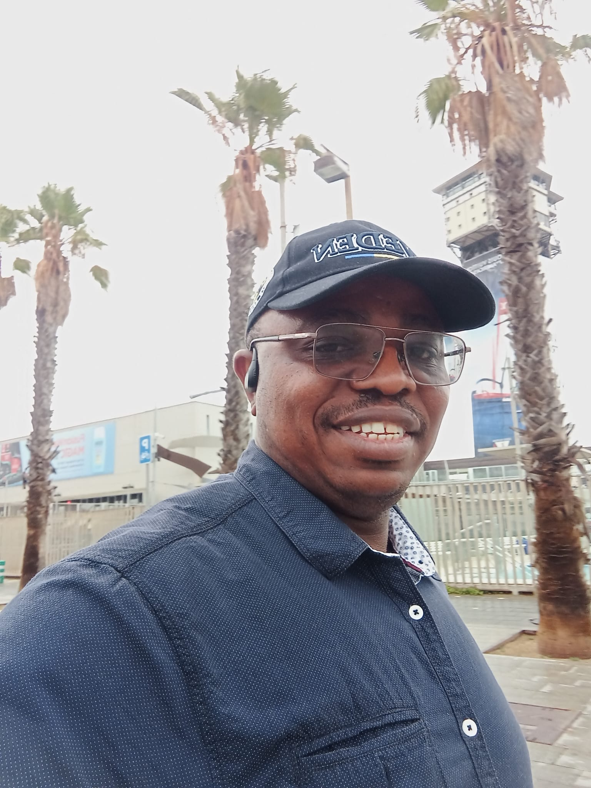

I am a researcher at ICTEAM (INGI), UCLouvain, Belgium, and Senior Lecturer at the University of Maroua, Cameroon. I work in Applied Mathematics, Constraint Programming and Combinatorial Optimization, with a particular focus on constraint-based scheduling.
I obtained my Ph.D. in Applied Mathematics from the University of Yaounde 1 (Cameroon) in 2014, with a thesis on propagation techniques of resource constraints for cumulative scheduling. Before that, I obtained a DEA and a Master in Numerical Analysis, a BSc in Mathematics and a Secondary and High School Teacher's Diploma from the same university.
I started my career as a mathematics teacher at the Government Bilingual High School of Maroua (2004-2009), then joined the University of Maroua as Lecturer and Researcher, first at the Higher Teachers Training College and then at the Department of Mathematics and Computer Science of the Faculty of Sciences. From 2015 to 2017, I was Head of the Department of General Studies at the Higher Institute of Transport and Logistics, University of Bamenda.
I have had several research stays abroad: at Université Laval, Canada (Abel Visiting Scholar Program, 2017), at UCLouvain, Belgium (several visits between 2019 and 2024, ARES postdoctoral scholarship), and at LAAS-CNRS Toulouse, France (team ROC, INSA Visiting Scholarship, 2024). Since 2025, I have been working at UCLouvain, in collaboration with CETIC, on DDOLib, a solver built around dynamic programming and decision diagrams. I have been a qualified researcher at UCLouvain since May 2026.
Google Scholar DBLP Semantic Scholar